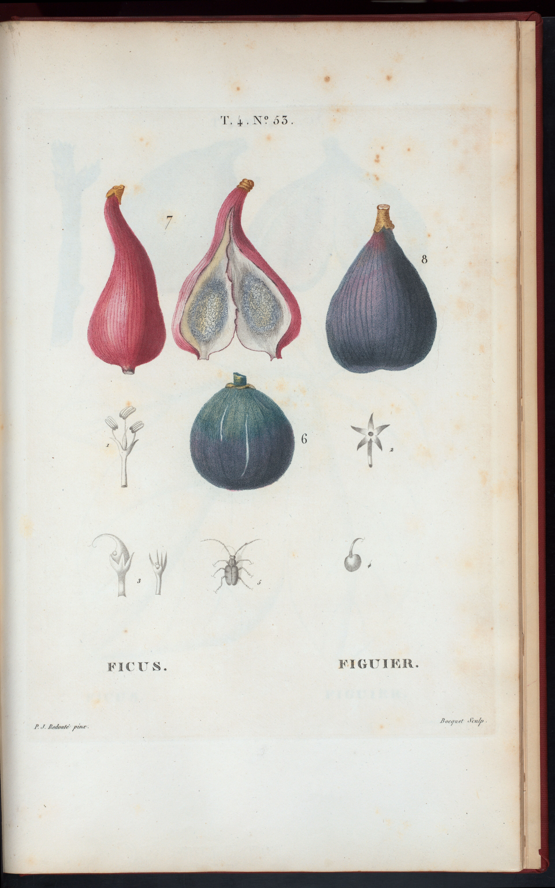
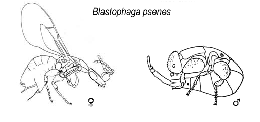
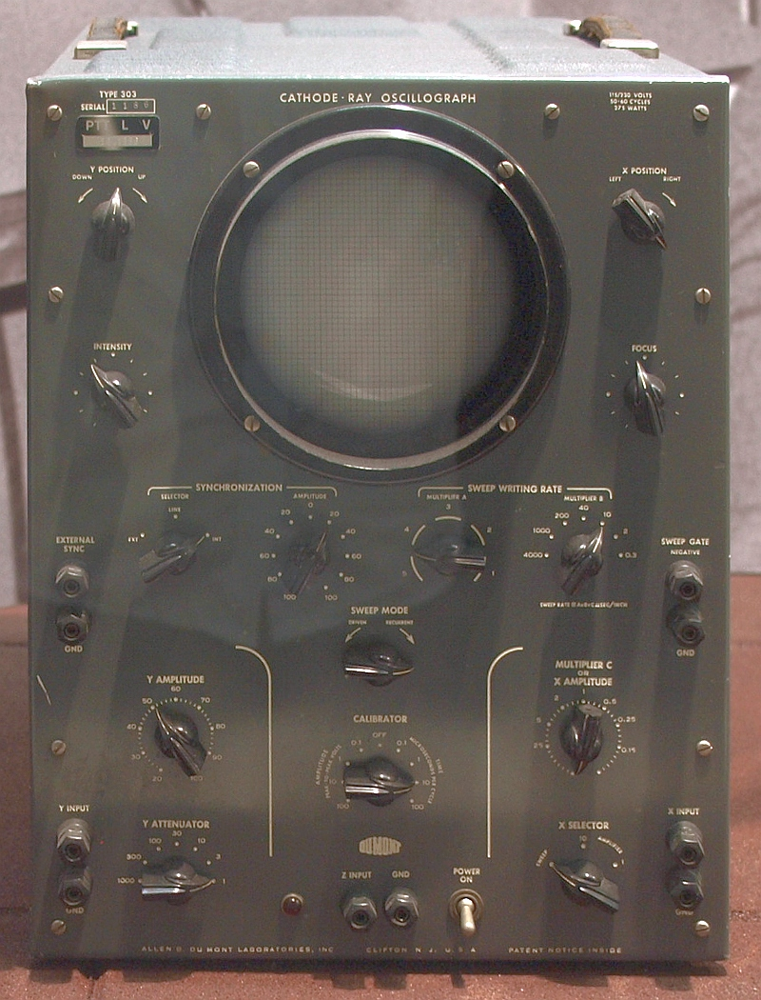

TOOL
THE MACHINE EXTENDS THE HUMAN.
MARCH 1960
IRE TRANSACTIONS · HFE-1
J. C. R. LICKLIDER
AN INSTRUCTIONAL FILM ABOUT A MACHINE


Take three answers. There are no punch-card penalties.
PARAPHRASE · PAPER §2
BUT WHAT IF
ORIGINAL TEXT · AS QUOTED BY LICKLIDER · PAPER §2
“The question is not, ‘What is the answer?’ The question is, ‘What is the question?’”
— HENRI POINCARÉ, AS CITED BY LICKLIDER
THE COMPUTER MOVES HERE.
FILM UNIT 1.1 · SYMBIOSIS


SO WHICH ONE ARE WE?
PARAPHRASE · PAPER §1.1 · ARCHIVAL ILLUSTRATIONS
RELATIONSHIP CLASSIFICATION · FORM M/CS-12
THE MACHINE EXTENDS THE HUMAN.
THE HUMAN EXTENDS THE MACHINE.
DISSIMILAR CAPABILITIES. CLOSE COUPLING.
SELECTEDPARAPHRASE · PAPER §1.2
EXPERIMENT 57-B

OR TAKE GUESSES OUT LOUD
ORIGINAL STUDY DESCRIPTION · PAPER §3.1
OF HIS “THINKING” TIME WAS SPENT
GETTING INTO A POSITION TO THINK.
PARAPHRASE + ORIGINAL FIGURE · PAPER §3.1
ILLUSTRATIVE RECONSTRUCTION · BASED ON PAPER §3.1
ILLUSTRATIVE RECONSTRUCTION
“…oh.”
ORIGINAL TEXT · PAPER §3.1 “When the graphs were finished,
the relations were obvious at once…”
OUR INTERPRETATION · NOT A LICKLIDER QUOTATION
NEW FROM THE
ELECTRONIC COOPERATION DIVISION
PREPARING TO THINK…
WOULD YOU LIKE TO SEE THAT
ANOTHER WAY?
THESE MEASUREMENTS USE
DIFFERENT DEFINITIONS.
I HAVE PLOTTED
THREE ALTERNATIVES.
THIS RESULT APPEARS UNUSUAL.
ILLUSTRATIVE RECONSTRUCTION · INSPIRED BY PAPER §4
OUR INTERPRETATION · BASED ON PAPER §§2–4
NOT A PIPELINE. A CONVERSATION WITH REPRESENTATIONS.
OPERATING MANUAL · PERSONNEL ASSIGNMENT
PARAPHRASE · PAPER §4
MANY PEOPLE. ONE FAST MACHINE. REAL-TIME ACCESS.
ENOUGH STORAGE TO SUPPORT TECHNICAL WORK.
BY NAME AND BY PATTERN. FASTER THAN SERIAL SEARCH.
HUMANS SPECIFY GOALS. COMPUTERS SPECIFY COURSES.
DISPLAYS AND CONTROLS FIT FOR A CONVERSATION.
ORIGINAL TEXT · PAPER §5.4 “Instructions directed to computers specify courses;
instructions directed to human beings specify goals.”
PARAPHRASE · PAPER §5
PARAPHRASE · PAPER §5.5.1
ILLUSTRATIVE INTERACTION · NOT A HISTORICAL INTERFACE

AUTOMATIC SPEECH PRODUCTION / RECOGNITION
CLEAR SPEECH · DICTATION STYLE · NO UNUSUAL ACCENT
PARAPHRASE · PAPER §5.5.3

PARAPHRASE · PAPER §5.1
LIBRARY + STORAGE + RETRIEVAL + SYMBIOTIC FUNCTION
CONNECTED BY WIDE-BAND COMMUNICATION LINES
THIS IS NOT THE ARPANET REEL.
FIELD GUIDE ENTRY 19-B
THE COMPUTER IS NOT THE ANSWER.
IT MIGHT HELP YOU DISCOVER THE QUESTION.
OUR INTERPRETATION · NOT A LICKLIDER QUOTATIONOUR INTERPRETATION · CONTEMPORARY CONNECTION
“WHAT IF THE PATTERN CHANGES
UNDER THIS ASSUMPTION?”
“OH. THEN THE QUESTION
IS ACTUALLY…”
CAN AI DO MY WORK?
BUTIF THAT DISAPPEARED TOMORROW,
OR WOULD YOU GET TO THE INTERESTING QUESTION SOONER?
OUR INTERPRETATION · THE FILM’S CENTRAL ARGUMENT
NEXT REEL?
Swipe horizontally on touch screens. Click the lower controls if the projector operator has misplaced the keyboard.